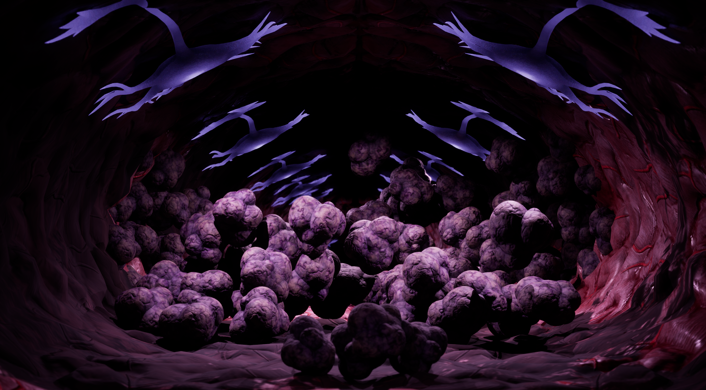
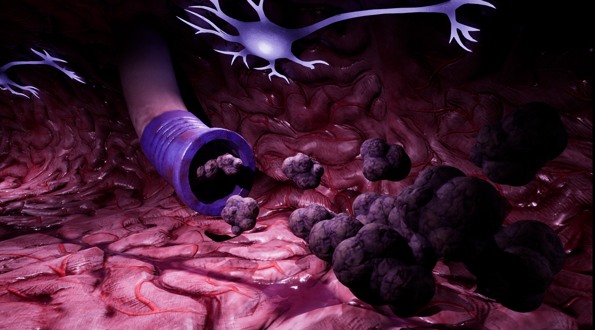
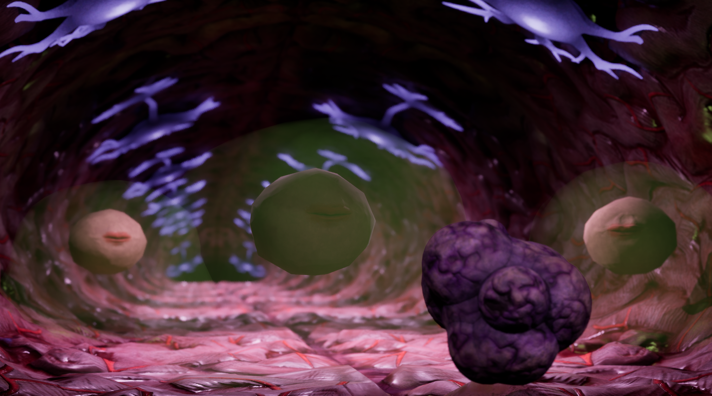
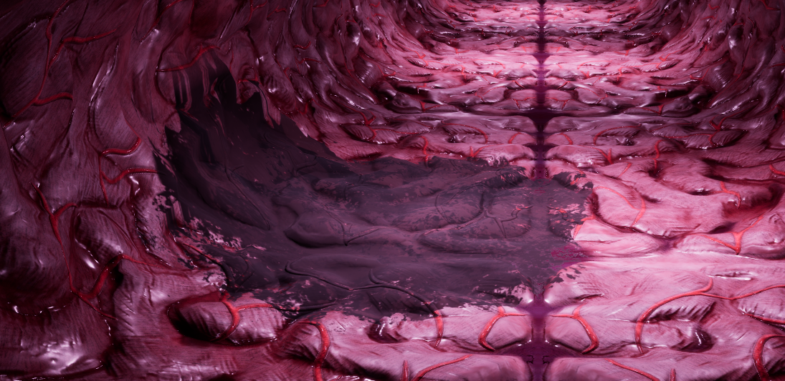
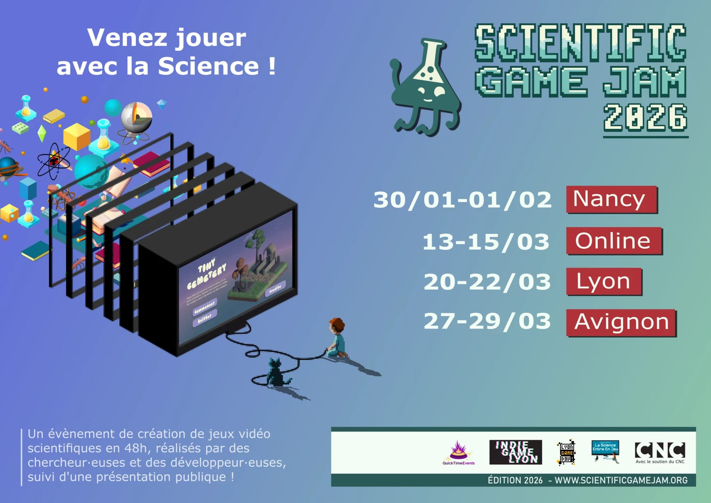

Présentation du jeu
Plus Rapide Tumeur est un runner où le joueur incarne une tumeur se développant dans le cerveau, cherchant à croître jusqu’à obstruer les canaux tout en évitant les défenses et traitements médicaux.

Plus Rapide Tumeur est un runner où le joueur incarne une tumeur se développant dans le cerveau, cherchant à croître jusqu’à obstruer les canaux tout en évitant les défenses et traitements médicaux.

Le but est de progresser dans un environnement contraint en évitant les obstacles tout en maximisant la croissance de la tumeur.

Le gameplay repose sur des mécaniques de runner avec génération dynamique d'obstacles et gestion du déplacement en temps réel.

Le jeu a été réalisé dans le cadre de la Scientific Game Jam 2026, avec pour objectif de vulgariser des travaux de recherche.
Il s’appuie sur la thèse d’Angélique Perrillat-Mercerot portant sur la modélisation du métabolisme énergétique cérébral et son application à l’imagerie des tumeurs.
Le projet a obtenu la 2ᵉ place sur 7 lors de la compétition.

Le jeu a été développé lors de la Scientific Game Jam 2026, un événement réunissant chercheurs et développeurs autour de la création de jeux scientifiques.